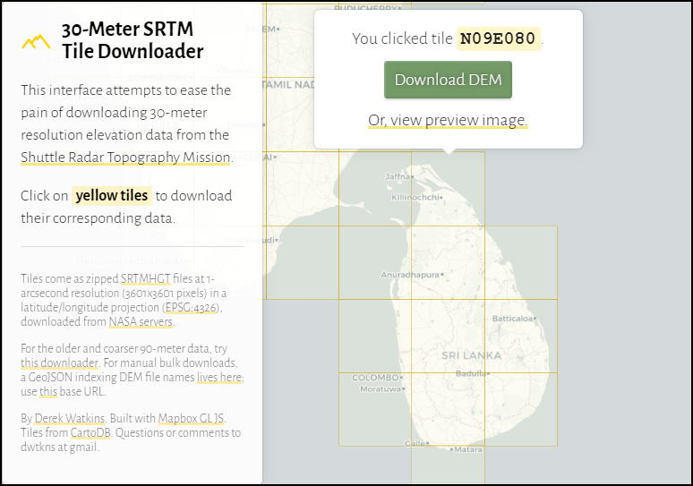
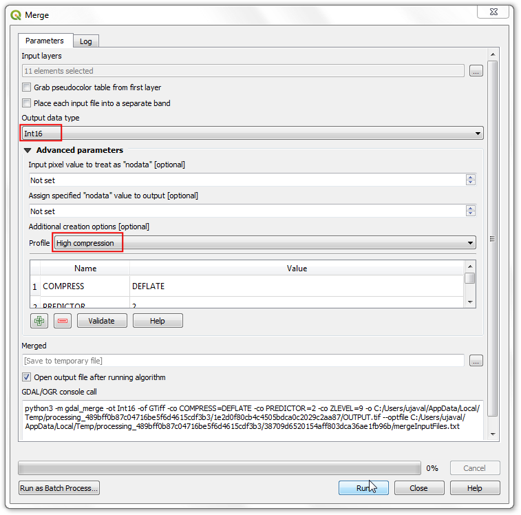
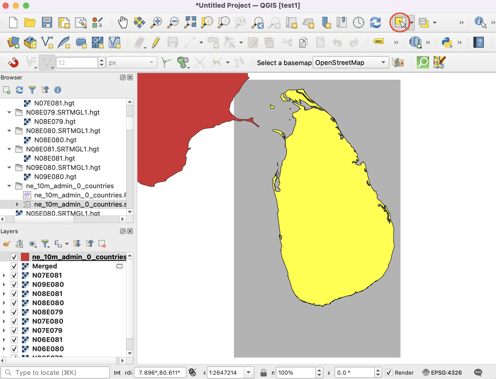

Ujaval Gandhi
Ujaval GandhiMosaicar y Recortar Ráster (QGIS3)¶
Este tutorial explora técnicas básicas para trabajar con rásters en QGIS como el mosaicado y creación de subconjunto.
Vista general de la tarea¶
Descargaremos datos de elevación para Sri Lanka en forma de teselas SRTM, las fusionaremos y recortaremos el mosaico resultante al límite del país.
Otras habilidades que aprenderá¶
Usar el representador de Relieve Sombreado para visualizar datos de elevación.
Obtener los datos¶
El Land Processes Distributed Active Archive Center (LP DAAC) provee conjuntos de datos NASA Shuttle Radar Topography Mission (SRTM) Global 1 arc second como teselas de elevación.
Un interfaz sencillo para descargar teselas para un área dada es el Descargador de Tesela SRTM de 30-Metros por Derek Watkins. Descargue las teselas individuales SRTM que cubren Sri Lanka. Note que necesitará una cuenta Earth Data gratuita para descargar los datos.
We will also need the Admin 0 - Countries shapefile from Natural Earth.
Para su comodidad, puede descargar directamente una copia de los conjuntos de datos de los enlaces abajo:
Fuente de datos [SRTM] , [NATURALEARTH]
Procedimiento¶
Abra QGIS y localice los archivos descargados en el panel Explorador. Expanda los archivos zip individuales para mostrar los archivos
.hgt. Mantenga presionada la tecla Ctrl y seleccione todos los archivos individuales. Una vez seleccionado, arrástrelos a la pantalla.

Verá 11 capas individuales cargadas en el panel Capas y mostradas en pantalla. Vamos a fusionar estas teselas individuales en un solo mosaico. Vaya a .

Busque y localice la herramienta . Haga doble-clic para iniciarla.

En el diálogo Combinar, clic en el botón … junto a Capas de entrada. Clic Seleccionar Todos para seleccionar todas las capas individuales.

Como se menciona en detalles de la capa conjunto de datos, el tipo de datos de entrada es entero 16 bit con signo. Para mantener la integridad de datos, deberíamos mantener el mismo tipo de datos para la capa fusionada. Seleccione
Int16como el Tipo de datos de salida. También el formato de datos predeterminado de salida es GeoTiff. Los archivos geoTiff pueden ser muy grandes si no son comprimidos. ElijaAlta Compresióncomo el Perfil. Clic en Ejecutar.

Una vez que termine el procesamiento, la nueva capa
OUTPUTserá agregada al panel Capas. En caso que la capa no está en la parte de arriba de la pila, selecciónela y arrástrela a la parte de arriba en el panel Capas.

Verá que la capa
OUTPUTcontiene los datos de elevación fusionados de las teselas de entrada individuales. La visualización predeterminado sólo muestra los valores de píxel en el rango de 0-255. Pero nuestros datos contienen píxeles con valores de -14 a 2371, resultando en una representación de bajo contraste. Cambiémoslo a una mejor visualización. Clic en el botón Abrir el panel de Estilo de capa en el panel Capas.

En el panel Estilo de Capa, clic en la lista desplegable Tipo de representador y seleccione el representador
Hillshade. Esta opción de representador es particularmente apropiada para datos de elevación.

Otra operación común cuando se trabaja con rásters es recortar un ráster a su área de interés. Para este tutorial, recortaremos la capa fusionada al límite de país para Sri Lanka. Localice el archivo descargado
ne_10m_admin_0_countries.zipy expándalo. Arrastre el archivone_10m_admin_0_countries.shpal lienzo.

Seleccione la capa recién agregada
ne_10m_admin_0_countriesen el panel Capas. Clic el botón Seleccionar Objetos por área con un solo clic en la Barra de herramientas de Atributos. Una vez seleccionada, clic el polígono para Sri Lanka para seleccionarlo.

Mantenga la selección como está y abra . Busque y ubique la herramienta . Haga doble-clic para iniciarla.

En el diálogo Cortar Ráster por Capa de Máscara, defina
OUTPUTcomo la Capa de entrada. Seleccionene_10m_admin_0_countriescomo la Capa máscara, y marque la casilla Sólo objetos seleccionados. Ingrese0.0000como el Asignar un valor sin datos especificado para las bandas de salida. Como antes, elijaAlta compresióncomo el Perfil. Clic en Ejecutar.

Una nueva capa
OUTPUTserá agregada al panel Capas. En este punto, puede que sea difícil ver la salida debido a que tenemos demasiadas capas sobrepuestas visibles. Clic el botón Gestionar Temas de Mapa en el panel Capas y elijaEsconder todas las capas.

Active sólo la última capa
OUTPUTy dele estilo con el representadorHillshadecomo se hizo antes.

La capa de elevación salida fusionada y recortada para Sri Lanka está lista.

If you want to give feedback or share your experience with this tutorial, please comment below. (requires GitHub account)